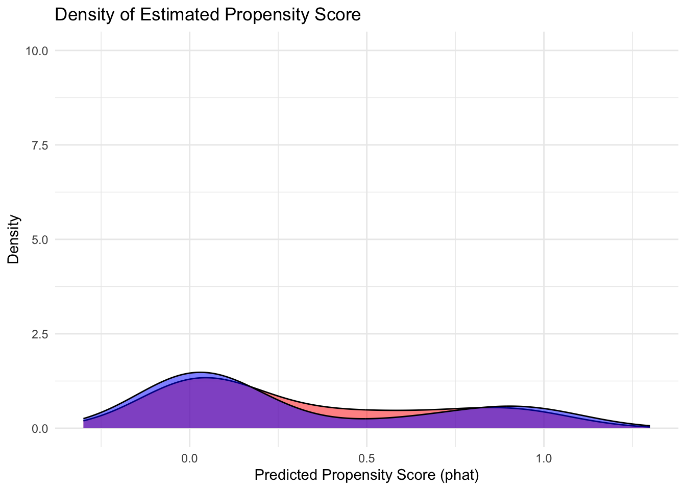

# I use function that checks if a package is already loaded - if not loads it
# No more install.library stuff
check.packages <- function(pkg) {
new.pkg <- pkg[!(pkg %in% installed.packages()[, "Package"])]
if (length(new.pkg)) {
install.packages(new.pkg, dependencies = TRUE)
}
sapply(pkg, require, character.only = TRUE)
}
# A vector of packages I think would be needed
packages <- c("janitor", "tidyverse", # Packages for data wrangling
"here", # Will help you get rid of writing long path names for files
"kableExtra","stargazer", # For nice looking tabular output
"readstata13","haven" # For loading stata files
)
# Check if packages are installed and loaded using the function created above
check.packages(packages)Matching
Building the intuition: Stratification or Subclassification
For approaching the causal effects, in the language of DAGs, we have to close all the backdoor paths between our treatment and outcome of interest. Let’s see that with an illustrative example from Causal Inference: The Mixtape (Cunningham, n.d.)
Research Question: Would being in First Class in titanic have increased the chances of survival? As a causal effect can we isolate it?
First class was located higher on the ship and therefore likely led to a greater chance of getting into one of the few lifeboats onboard. We could estimate the ATE of being in first class like this:
# Function to load data from Causal Mixtape github page
read_data <- function(df)
{
full_path <- paste("https://github.com/scunning1975/mixtape/raw/master/",
df, sep = "")
print(full_path) # To show what was the final url accessed
df <- read_dta(full_path)
return(df)
}# load data and create a variable "d" for individuals in first class
titanic <- read_data("titanic.dta") %>%
mutate(d = case_when(class == 1 ~ 1, TRUE ~ 0))[1] "https://github.com/scunning1975/mixtape/raw/master/titanic.dta"# calculate expected outcome for the treatment group - first class
ey1 <- titanic %>%
filter(d == 1) %>%
pull(survived) %>%
mean()
ey1[1] 0.6246154# calculate expected outcome for the control group - all other classes onboard
ey0 <- titanic %>%
filter(d == 0) %>%
pull(survived) %>%
mean()
ey0[1] 0.2707889# calculate the simple difference in outcomes
(sdo <- ey1 - ey0)[1] 0.3538265Say in our research, we learn that women and children were more likely to be in first class because only wealthy families could afford this kind of travel. Additionally, the social norm during the boarding of the lifeboats was that women and children got first priority. Now we have a problem because being a woman or a child are confounders, which means that our estimate of the ATE is biased.
We can handle this via stratification by a bit of data wrangling
# create a variable to indicate each of our strata - two for sex (male = 1), and two for age(adult = 1)
titanic = titanic %>%
mutate(s = case_when(sex == 0 & age == 1 ~ 1,
sex == 0 & age == 0 ~ 2,
sex == 1 & age == 1 ~ 3,
sex == 1 & age == 0 ~ 4,
TRUE ~ 0))
# create treatment variable for those in first class
titanic <- titanic %>%
mutate(d = case_when(class == 1 ~ 1, TRUE ~ 0))
# calculate survival rate for each pair of strata and treatment
ey11 <- titanic %>%
filter(s == 1 & d == 1) %>%
pull(survived) %>%
mean()
ey10 <- titanic %>%
filter(s == 1 & d == 0) %>%
pull(survived) %>%
mean()
ey21 <- titanic %>%
filter(s == 2 & d == 1) %>%
pull(survived) %>%
mean()
ey20 <- titanic %>%
filter(s == 2 & d == 0) %>%
pull(survived) %>%
mean()
ey31 <- titanic %>%
filter(s == 3 & d == 1) %>%
pull(survived) %>%
mean()
ey30 <- titanic %>%
filter(s == 3 & d == 0) %>%
pull(survived) %>%
mean()
ey41 <- titanic %>%
filter(s == 4 & d == 1) %>%
pull(survived) %>%
mean()
ey40 <- titanic %>%
filter(s == 4 & d == 0) %>%
pull(survived) %>%
mean()
# calculate differences between strata
diff1 = ey11 - ey10
diff2 = ey21 - ey20
diff3 = ey31 - ey30
diff4 = ey41 - ey40
# calculate number of control units
obs = nrow(titanic %>% filter(d == 0))
# create weights for each strata
wt1 <- titanic %>%
filter(s == 1 & d == 0) %>%
nrow(.)/obs
wt2 <- titanic %>%
filter(s == 2 & d == 0) %>%
nrow(.)/obs
wt3 <- titanic %>%
filter(s == 3 & d == 0) %>%
nrow(.)/obs
wt4 <- titanic %>%
filter(s == 4 & d == 0) %>%
nrow(.)/obs
# calculate weighted average treatment effect
(wate = diff1*wt1 + diff2*wt2 + diff3*wt3 + diff4*wt4)[1] 0.1887847Exact Matching
Example from Causal Inference: The Mixtape by Scott Cunningham.
Do training programs have a causal effect on earnings?.
But, in this very simple example, we notice that individuals who participated in the training program are younger on average than those in the control group (What type of bias is this?).
This violates the conditional independence assumption. We can address this using exact matching on age as follows:
# load data
training_example <- read_data("training_example.dta") %>%
slice(1:20)[1] "https://github.com/scunning1975/mixtape/raw/master/training_example.dta"```{r}
#| echo: true
#| output: asis
# view data table to see what matching on age looks like
View(training_example)
```This dataset is for illustration where we have exact matches for all units in the treated group on the covariate of age from the control group.
Let’s see the distribution of covariate age in the two groups.
::: {.panel-tabset}
Treatment Group
# histogram of age for treatment group - mean at red line
ggplot(training_example, aes(x=age_treat)) +
geom_histogram(bins = 10, na.rm = TRUE) +
geom_vline(aes(xintercept = mean(age_treat, na.rm = T)), color = "red")Control Group
# histogram of age for control group - mean at red line
ggplot(training_example, aes(x=age_control)) +
geom_histogram(bins = 10, na.rm = TRUE) +
geom_vline(aes(xintercept = mean(age_control, na.rm = T)), color = "red"):::
After exact matching
# histogram of age for matched group - mean at red line
ggplot(training_example, aes(x=age_matched))+
geom_histogram(bins = 10, na.rm = TRUE) +
geom_vline(aes(xintercept = mean(age_matched, na.rm = T)), color = "red")# calculate mean wages for treatment group
trained = training_example %>%
filter(!is.na(age_treat)) %>%
mutate(earnings_treat = as.numeric(earnings_treat)) %>%
pull(earnings_treat) %>%
mean()
# calculate mean wages for matched control group
nontrained = training_example %>%
filter(!is.na(age_matched)) %>%
mutate(earnings_matched = as.numeric(earnings_matched)) %>%
pull(earnings_matched) %>%
mean()
att_train = trained - nontrained # Notice - This is the ATT
att_train[1] 1695Propensity Score Matching
Replication data for Samuels and Shugart’s book “Presidents, Parties and Prime Ministers: How the Separation of Powers Affects Party Organization and Behavior” Cambridge University press, 2010 (Data extended by students from U-Mich).
Treatment here is the type of system i.e. Presidential or Parlimentary.
# load data
data <- read_csv("data/matching_data.csv")
# summarize the data
summary(data$purepres) # treatment Min. 1st Qu. Median Mean 3rd Qu. Max.
0.0000 0.0000 0.0000 0.3068 1.0000 1.0000 summary(data$pureparl) # control Min. 1st Qu. Median Mean 3rd Qu. Max.
0.0000 0.0000 0.0000 0.4205 1.0000 1.0000 Exploratory Data Analysis
# create a table to see the count of each type of system in our data set
data <- data %>%
mutate(
type = case_when( purepres==1 ~ "PRES",
pureparl==1 ~ "PARL",
presparlpres==1 | premiprespres==1 |presparlpm == 1 ~ "MIXED",
TRUE ~ NA
)
)
# Checking Distribution
table(data$type)
MIXED PARL PRES
9 37 27 Why might this distribution create a problem? (Hint: Think about balance/overlap)
# create dataset of covariates of interest
X <- data %>%
select(indviol, year_indep, dindep_decol, dindep_seces,
chrstprotpct, chrstcatpct, judgenpct,
islmgenpct, budgenpct,
a_ethnic, a_ling, a_relig,
gini,
land_kilometers,
life_expectency_1800, gdp_per_capita_1800,
density,
damerica, dsouthamerica, deurope, dafrica,
dasia, doceania,
colony_esp, colony_gbr, colony_fra, colony_prt, colony_oeu,
rugged
)
# rename the variables
colnames(X) = c("Violent Independence", "Year of Independence", "Independency by Decolonization",
"Independence by Secession", "Christian Protestant Pct", "Christian Catholic Pct",
"Jewish Pct", "Islam Pct", "Budhist Pct",
"Ethic Fractionalization", "Linguistic Fractionalization", "Religious Fractionalization",
"Gini",
"Land (km)",
"Life expectancy 1800", "GDP per cap 1800",
"Population density",
"Country in America", "Country in South America", "Country in Europe", "Country in Africa", "Country in Asia", "Country in Oceania",
"Spanish colony", "British colony", "France colony", "Portugal colony", "OEU colony",
"Ruggedness")```{r}
#we summarize X
summary(X)
```#we summarize X
summary(X) Violent Independence Year of Independence Independency by Decolonization
Min. :0.0000 Min. : 943 Min. :0.0000
1st Qu.:0.0000 1st Qu.:1827 1st Qu.:0.0000
Median :1.0000 Median :1918 Median :1.0000
Mean :0.5568 Mean :1843 Mean :0.5114
3rd Qu.:1.0000 3rd Qu.:1960 3rd Qu.:1.0000
Max. :1.0000 Max. :1993 Max. :1.0000
Independence by Secession Christian Protestant Pct Christian Catholic Pct
Min. :0.0000 Min. :0.0000 Min. :0.00000
1st Qu.:0.0000 1st Qu.:0.0015 1st Qu.:0.00905
Median :0.0000 Median :0.0181 Median :0.17000
Mean :0.2727 Mean :0.1179 Mean :0.38277
3rd Qu.:1.0000 3rd Qu.:0.0735 3rd Qu.:0.88380
Max. :1.0000 Max. :0.9900 Max. :0.98040
NA's :1 NA's :1
Jewish Pct Islam Pct Budhist Pct Ethic Fractionalization
Min. :0.00000 Min. :0.0000 Min. :0.00000 Min. :0.001998
1st Qu.:0.00000 1st Qu.:0.0000 1st Qu.:0.00000 1st Qu.:0.181835
Median :0.00020 Median :0.0022 Median :0.00000 Median :0.406181
Mean :0.01297 Mean :0.1309 Mean :0.03390 Mean :0.395852
3rd Qu.:0.00205 3rd Qu.:0.1146 3rd Qu.:0.00035 3rd Qu.:0.591322
Max. :0.87530 Max. :0.9947 Max. :0.88540 Max. :0.879100
NA's :1 NA's :1 NA's :1
Linguistic Fractionalization Religious Fractionalization Gini
Min. :0.002113 Min. :0.002755 Min. :19.40
1st Qu.:0.087104 1st Qu.:0.220886 1st Qu.:36.50
Median :0.303091 Median :0.408493 Median :45.10
Mean :0.338181 Mean :0.423653 Mean :43.65
3rd Qu.:0.546679 3rd Qu.:0.615734 3rd Qu.:51.70
Max. :0.873408 Max. :0.860260 Max. :73.90
NA's :1 NA's :7
Land (km) Life expectancy 1800 GDP per cap 1800 Population density
Min. : 2030 Min. :25.10 Min. : 368 Min. : 0.02199
1st Qu.: 60625 1st Qu.:30.16 1st Qu.: 740 1st Qu.: 1.13435
Median : 228780 Median :32.90 Median : 976 Median : 8.99563
Mean : 964830 Mean :32.67 Mean :1099 Mean : 15.92361
3rd Qu.: 656352 3rd Qu.:35.73 3rd Qu.:1442 3rd Qu.: 19.66593
Max. :16376870 Max. :40.00 Max. :2892 Max. :121.29887
NA's :1
Country in America Country in South America Country in Europe
Min. :0.00 Min. :0.0000 Min. :0.0000
1st Qu.:0.00 1st Qu.:0.0000 1st Qu.:0.0000
Median :0.00 Median :0.0000 Median :0.0000
Mean :0.25 Mean :0.1136 Mean :0.3409
3rd Qu.:0.25 3rd Qu.:0.0000 3rd Qu.:1.0000
Max. :1.00 Max. :1.0000 Max. :1.0000
Country in Africa Country in Asia Country in Oceania Spanish colony
Min. :0.0000 Min. :0.0000 Min. :0.00000 Min. :0.0000
1st Qu.:0.0000 1st Qu.:0.0000 1st Qu.:0.00000 1st Qu.:0.0000
Median :0.0000 Median :0.0000 Median :0.00000 Median :0.0000
Mean :0.1591 Mean :0.2045 Mean :0.04545 Mean :0.2152
3rd Qu.:0.0000 3rd Qu.:0.0000 3rd Qu.:0.00000 3rd Qu.:0.0000
Max. :1.0000 Max. :1.0000 Max. :1.00000 Max. :1.0000
NA's :9
British colony France colony Portugal colony OEU colony
Min. :0.0000 Min. :0.00000 Min. :0.00000 Min. :0.00000
1st Qu.:0.0000 1st Qu.:0.00000 1st Qu.:0.00000 1st Qu.:0.00000
Median :0.0000 Median :0.00000 Median :0.00000 Median :0.00000
Mean :0.2785 Mean :0.05063 Mean :0.02532 Mean :0.02532
3rd Qu.:1.0000 3rd Qu.:0.00000 3rd Qu.:0.00000 3rd Qu.:0.00000
Max. :1.0000 Max. :1.00000 Max. :1.00000 Max. :1.00000
NA's :9 NA's :9 NA's :9 NA's :9
Ruggedness
Min. :0.0370
1st Qu.:0.4255
Median :1.0130
Mean :1.2591
3rd Qu.:1.7745
Max. :5.0430
NA's :9 Checking Balance of Covariates
# balance function to calculate normalized distance
# Look through this function in detail what each of the arguments are doing
balance <- function(x, Tr, xname, alpha=0.05) {
Tr = Tr[!is.na(x)]
x = x[!is.na(x)]
mut = mean(x[Tr==1])
muc = mean(x[Tr==0])
s2t = var(x[Tr==1])
s2c = var(x[Tr==0])
delta = (mut - muc)/sqrt((s2t+s2c)/2) # this is the normalized difference
ql = quantile(x[Tr==0], probs = alpha/2) # lower tail for control
qh = quantile(x[Tr==0], probs = 1-alpha/2) # upper tail for control
pi = sum(x[Tr==1] < ql)/(length(Tr==1)) + sum(x[Tr==1] > qh)/(length(Tr==1)) # fraction
cat("------------------------------------------\n")
cat("Variable ", xname, "\n")
cat("Mean Treatment (Pres) ", mut, "\n")
cat("Mean Control (Parl)", muc, "\n")
cat("Normalized difference", delta, "\n")
cat("------------------------------------------\n")
cat("Mass of treated distribution in the control tails", round(pi*100, 2), "% \n")
cat("------------------------------------------\n")
return(list(mut=mut,muc=muc, s2t=s2t, s2c=s2c, delta=delta, pi=pi))
}```{r}
# (1) Let's look at normalized differences and Mass of Treated Distribution in Control Tailes
# Also Recall Rubin's rule: if above |0.25|, then OLS likely too sensitive to misspecification
# create vector for treatment index
Tr = data$purepres
# check for balance on treatment
result <- imap(X, ~ balance(x = .x, Tr = Tr, xname = .y))
```------------------------------------------
Variable Violent Independence
Mean Treatment (Pres) 0.6666667
Mean Control (Parl) 0.5081967
Normalized difference 0.3218476
------------------------------------------
Mass of treated distribution in the control tails 0 %
------------------------------------------
------------------------------------------
Variable Year of Independence
Mean Treatment (Pres) 1872.444
Mean Control (Parl) 1829.754
Normalized difference 0.2299536
------------------------------------------
Mass of treated distribution in the control tails 0 %
------------------------------------------
------------------------------------------
Variable Independency by Decolonization
Mean Treatment (Pres) 0.5925926
Mean Control (Parl) 0.4754098
Normalized difference 0.2333725
------------------------------------------
Mass of treated distribution in the control tails 0 %
------------------------------------------
------------------------------------------
Variable Independence by Secession
Mean Treatment (Pres) 0.3703704
Mean Control (Parl) 0.2295082
Normalized difference 0.3066766
------------------------------------------
Mass of treated distribution in the control tails 0 %
------------------------------------------
------------------------------------------
Variable Christian Protestant Pct
Mean Treatment (Pres) 0.04634815
Mean Control (Parl) 0.1500733
Normalized difference -0.5113226
------------------------------------------
Mass of treated distribution in the control tails 0 %
------------------------------------------
------------------------------------------
Variable Christian Catholic Pct
Mean Treatment (Pres) 0.6333444
Mean Control (Parl) 0.2700083
Normalized difference 0.974737
------------------------------------------
Mass of treated distribution in the control tails 0 %
------------------------------------------
------------------------------------------
Variable Jewish Pct
Mean Treatment (Pres) 0.003403704
Mean Control (Parl) 0.01728167
Normalized difference -0.173385
------------------------------------------
Mass of treated distribution in the control tails 2.3 %
------------------------------------------
------------------------------------------
Variable Islam Pct
Mean Treatment (Pres) 0.08145926
Mean Control (Parl) 0.15313
Normalized difference -0.2808659
------------------------------------------
Mass of treated distribution in the control tails 0 %
------------------------------------------
------------------------------------------
Variable Budhist Pct
Mean Treatment (Pres) 0.006037037
Mean Control (Parl) 0.046435
Normalized difference -0.3403212
------------------------------------------
Mass of treated distribution in the control tails 0 %
------------------------------------------
------------------------------------------
Variable Ethic Fractionalization
Mean Treatment (Pres) 0.4554665
Mean Control (Parl) 0.3694653
Normalized difference 0.3641619
------------------------------------------
Mass of treated distribution in the control tails 3.41 %
------------------------------------------
------------------------------------------
Variable Linguistic Fractionalization
Mean Treatment (Pres) 0.3310051
Mean Control (Parl) 0.3412398
Normalized difference -0.03638428
------------------------------------------
Mass of treated distribution in the control tails 4.6 %
------------------------------------------
------------------------------------------
Variable Religious Fractionalization
Mean Treatment (Pres) 0.3815061
Mean Control (Parl) 0.4423086
Normalized difference -0.2694968
------------------------------------------
Mass of treated distribution in the control tails 2.27 %
------------------------------------------
------------------------------------------
Variable Gini
Mean Treatment (Pres) 49.35769
Mean Control (Parl) 40.95091
Normalized difference 0.759161
------------------------------------------
Mass of treated distribution in the control tails 1.23 %
------------------------------------------
------------------------------------------
Variable Land (km)
Mean Treatment (Pres) 1139389
Mean Control (Parl) 887566
Normalized difference 0.1041268
------------------------------------------
Mass of treated distribution in the control tails 1.14 %
------------------------------------------
------------------------------------------
Variable Life expectancy 1800
Mean Treatment (Pres) 31.2861
Mean Control (Parl) 33.27707
Normalized difference -0.5445587
------------------------------------------
Mass of treated distribution in the control tails 0 %
------------------------------------------
------------------------------------------
Variable GDP per cap 1800
Mean Treatment (Pres) 918.2593
Mean Control (Parl) 1180.317
Normalized difference -0.5806425
------------------------------------------
Mass of treated distribution in the control tails 1.15 %
------------------------------------------
------------------------------------------
Variable Population density
Mean Treatment (Pres) 7.215313
Mean Control (Parl) 19.77811
Normalized difference -0.6009871
------------------------------------------
Mass of treated distribution in the control tails 2.27 %
------------------------------------------
------------------------------------------
Variable Country in America
Mean Treatment (Pres) 0.6666667
Mean Control (Parl) 0.06557377
Normalized difference 1.570273
------------------------------------------
Mass of treated distribution in the control tails 0 %
------------------------------------------
------------------------------------------
Variable Country in South America
Mean Treatment (Pres) 0.3333333
Mean Control (Parl) 0.01639344
Normalized difference 0.9015721
------------------------------------------
Mass of treated distribution in the control tails 10.23 %
------------------------------------------
------------------------------------------
Variable Country in Europe
Mean Treatment (Pres) 0
Mean Control (Parl) 0.4918033
Normalized difference -1.379766
------------------------------------------
Mass of treated distribution in the control tails 0 %
------------------------------------------
------------------------------------------
Variable Country in Africa
Mean Treatment (Pres) 0.1851852
Mean Control (Parl) 0.147541
Normalized difference 0.09979829
------------------------------------------
Mass of treated distribution in the control tails 0 %
------------------------------------------
------------------------------------------
Variable Country in Asia
Mean Treatment (Pres) 0.1481481
Mean Control (Parl) 0.2295082
Normalized difference -0.2063768
------------------------------------------
Mass of treated distribution in the control tails 0 %
------------------------------------------
------------------------------------------
Variable Country in Oceania
Mean Treatment (Pres) 0
Mean Control (Parl) 0.06557377
Normalized difference -0.3715509
------------------------------------------
Mass of treated distribution in the control tails 0 %
------------------------------------------
------------------------------------------
Variable Spanish colony
Mean Treatment (Pres) 0.6666667
Mean Control (Parl) 0.01818182
Normalized difference 1.833951
------------------------------------------
Mass of treated distribution in the control tails 20.25 %
------------------------------------------
------------------------------------------
Variable British colony
Mean Treatment (Pres) 0.2083333
Mean Control (Parl) 0.3090909
Normalized difference -0.2282852
------------------------------------------
Mass of treated distribution in the control tails 0 %
------------------------------------------
------------------------------------------
Variable France colony
Mean Treatment (Pres) 0.04166667
Mean Control (Parl) 0.05454545
Normalized difference -0.05934487
------------------------------------------
Mass of treated distribution in the control tails 0 %
------------------------------------------
------------------------------------------
Variable Portugal colony
Mean Treatment (Pres) 0.04166667
Mean Control (Parl) 0.01818182
Normalized difference 0.1357614
------------------------------------------
Mass of treated distribution in the control tails 1.27 %
------------------------------------------
------------------------------------------
Variable OEU colony
Mean Treatment (Pres) 0.04166667
Mean Control (Parl) 0.01818182
Normalized difference 0.1357614
------------------------------------------
Mass of treated distribution in the control tails 1.27 %
------------------------------------------
------------------------------------------
Variable Ruggedness
Mean Treatment (Pres) 1.204625
Mean Control (Parl) 1.282836
Normalized difference -0.08265628
------------------------------------------
Mass of treated distribution in the control tails 0 %
------------------------------------------The “Mass of treated distribution in the control tails” is a percentage that indicates how much of the treated group’s data lies in the extreme tails of the control group’s distribution. A high value suggests imbalance between the two groups, as it indicates that the treated group has many values in regions of the distribution that are less typical for the control group.
Why Is This Important?
In balance checks meant for attribution of effect to treatment, as done under assumpotion of uncoundedness or selection on observables, we want the treated and control groups to be similar in distribution for all covariates (except for the treatment assignment). When there’s a large portion of the treated group in the tails of the control distribution, it suggests that the two groups are not well balanced for that variable, meaning there may be substantial differences in their distribution. This would raise concerns about whether we can attribute the differences in outcomes to the treatment alone, rather than to the covariates being imbalanced.
Propensity Score Matching on Treatment and Control
# calculate the propensity scores with full data set
pscore<-glm(Tr~as.matrix(X),family=binomial(link=logit)) # why the warnings?
# create smaller X vector - taking out variables like continent and colonial history
X2 <- data %>%
select(
Violent_Independence = indviol,
Year_of_Independence = year_indep,
Independency_by_Decolonization = dindep_decol,
Independence_by_Secession = dindep_seces,
Christian_Protestant_Pct = chrstprotpct,
Christian_Catholic_Pct = chrstcatpct,
Jewish_Pct = judgenpct,
Islam_Pct = islmgenpct,
Budhist_Pct = budgenpct,
Ethnic_Fractionalization = a_ethnic,
Linguistic_Fractionalization = a_ling,
Religious_Fractionalization = a_relig,
gini,
Land_kilometers = land_kilometers,
Life_expectancy_1800 = life_expectency_1800,
GDP_per_capita_1800 = gdp_per_capita_1800,
Population_density = density,
Country_in_Africa = dafrica,
Country_in_Asia = dasia,
Ruggedness = rugged
)
# create index for complete observations and select those
indx = complete.cases(X2)
# filter our treatment vector on complete cases
Tr2 = Tr[indx]
# calculate propensity score on this subset
pscore<-glm(Tr2 ~ ., data= X2[indx,],family=binomial(link=logit))
# pull out propensity score for graphing
phat<-pscore$fitted.values# histogram of propensity scores
ggplot(data.frame(phat), aes(x = phat)) +
geom_histogram(binwidth = 0.05, fill = "darkgreen", color = "black") +
labs(title = "Histogram of PScores",
x = "Predicted Propensity Scores (phat)",
y = "Frequency") +
theme_minimal()# plot pscore by treatment
ggplot(data)+
geom_density(data=data.frame(x=phat[Tr2==1]), aes(x = x, fill="Tr"), trim=FALSE, adjust=1/3, from=0, to=1, alpha=0.2, bw = "nrd0", kernel = "gaussian")+
geom_density(data=data.frame(x=phat[Tr2==0]), aes(x = x, fill="Co"), trim=FALSE, adjust=1/3, from=0, to=1, alpha=0.2, bw = "nrd0", kernel = "gaussian")+
scale_fill_manual(values=c("Tr"="blue", "Co"="red"), labels = c("Presidential (T = 1) ", "Parliamentary (T = 0)"))+
theme_bw()+
labs(
x = "Probability of Being in Treatment"
)+
theme(
legend.position = "bottom",
legend.title = element_blank()
)
Compare to what the histogram would look under simulated “random assignment” if both groups were identical on average
# Generate T using runif
T0 <- as.numeric(runif(n = length(Tr2), min = 0, max = 1) >= 0.5) # Create T variable
# Create a data frame combining phat and T
data2 <- data.frame(phat = phat, group = factor(T0, labels = c("Parliamentary", "Presidential")))
# Plot the density using ggplot2
ggplot(data2, aes(x = phat, fill = group)) +
geom_density(alpha = 0.5, color = "black") +
xlim(-0.3, 1.3) +
ylim(0, 10) +
labs(title = "Density of Estimated Propensity Score",
x = "Predicted Propensity Score (phat)",
y = "Density") +
scale_fill_manual(values = c("red", "blue")) +
theme_minimal() +
theme(legend.position = "topright")
The simulation shows ideal random assignment.
Comparing this to actual plots from propensity scores reveals the problem.
Taking a different (smaller) set of covariates
## Now include fewer variables to avoid perfect separation
X2 <- data %>%
select(indviol, year_indep, dindep_decol, dindep_seces,
a_ethnic, a_ling, a_relig,
life_expectency_1800, gdp_per_capita_1800,
damerica, dsouthamerica, deurope, dafrica,
dasia, doceania)
colnames(X2) = c("Violent Independenc", "Year of Independence", "Independency by Decolonization", "Independence by Secession",
"Ethic Fractionalization", "Linguistic Fractionalization", "Religious Fractionalization",
"Life expectancy 1800", "GDP per cap 1800",
"Country in America", "Country in South America", "Country in Europe", "Country in Africa", "Country in Asia", "Country in Oceania")
# index on complete cases
indx = complete.cases(X2)
# index treatment vector on complete cases
Tr2 = Tr[indx]
# calculate propensity score
pscore<-glm(Tr2~ . , data = X2[indx,],family=binomial(link=logit))
phat<-pscore$fitted.values
ggplot(data.frame(phat), aes(x = phat)) +
geom_histogram(binwidth = 0.05, fill = "pink", color = "black") +
labs(title = "Histogram of PScores",
x = "Predicted Propensity Scores (phat)",
y = "Frequency") +
theme_minimal()Comparing again
# Create a data frame combining phat and Tr2
data3 <- data.frame(phat = phat, Tr2 = factor(Tr2, labels = c("Parliamentary (Co)", "Presidential (Tr)")))
# Set up the plot layout
# First plot: density plots
p1 <- ggplot(data3, aes(x = phat, fill = Tr2)) +
geom_density(alpha = 0.5, position = "identity") +
scale_fill_manual(values = c("red", "blue")) +
labs(title = "Density of Predicted Propensity Scores",
x = "Predicted Propensity Score (phat)",
y = "Density") +
theme_minimal() +
theme(
legend.position = "bottom"
)
# Second plot: boxplot
p2 <- ggplot(data3, aes(x = Tr2, y = phat)) +
geom_boxplot(outlier.shape = NA) + # Suppressing outlier shapes for clarity
geom_jitter(width = 0.2, aes(color = Tr2), alpha = 0.6) + # Adding jitter for visibility
labs(title = "Boxplot of Predicted Propensity Scores by Group",
x = "Group",
y = "Predicted Propensity Score (phat)") +
scale_color_manual(values = c("red", "blue")) +
theme_minimal()+
theme(
legend.position = "bottom"
)
# Combine the two plots using gridExtra
library(gridExtra)
grid.arrange(p1, p2, ncol = 2)# These are all different ways to see balance on propensity scoresPropesnity Score Density
# Pscore Density plots
dat <- data.frame(phat = c(phat[Tr2==1], phat[Tr2==0]), Tr=Tr2, groups = as.character(c(rep("Tr", length(Tr2==1)), rep("Co", length(Tr2==0)))))
ggplot(dat)+
geom_density(data=data.frame(x=phat[Tr2==1]), aes(x = x, fill="Tr"), trim=FALSE, adjust=1/3, from=0, to=1, alpha=0.2, bw = "nrd0", kernel = "gaussian") +
geom_density(data=data.frame(x=phat[Tr2==0]), aes(x = x, fill="Co"), trim=FALSE, adjust=1/3, from=0, to=1, alpha=0.2, bw = "nrd0", kernel = "gaussian") +
scale_fill_manual(values=c("Tr"="red", "Co"="blue"), labels = c("Presidential (T = 1) ", "Parliamentary (T = 0)"))+
theme_bw()+
labs(
x = "Probability of Being in Treatment"
)+
theme(
legend.position = "bottom",
legend.title = element_blank()
)# balance in propensity score
result <- balance(x=phat, Tr= Tr2, xname="phat")------------------------------------------
Variable phat
Mean Treatment (Pres) 0.6811678
Mean Control (Parl) 0.1381606
Normalized difference 2.205072
------------------------------------------
Mass of treated distribution in the control tails 19.77 %
------------------------------------------As you can see, it is still quite unbalanced.
How to Use Matching
Match on Covariates
# set up
# install.packages("Matching")
library(Matching)
# match on covariates
mout1 <- Match(Tr=Tr[indx], X = X2[indx,], estimand="ATT", ties=FALSE)
summary(mout1)
Estimate... 0
SE......... 0
T-stat..... NaN
p.val...... NA
Original number of observations.............. 86
Original number of treated obs............... 26
Matched number of observations............... 26
Matched number of observations (unweighted). 26 ```{r}
MatchBalance(Tr[indx] ~ ., data = X2[indx,], match.out=mout1)
# What does the output mean?
# Let's look at the documentation of ?MatchBalance
# Let's look at the results again
# See what rows of value for covariates change
```
***** (V1) `Violent Independenc` *****
Before Matching After Matching
mean treatment........ 0.65385 0.65385
mean control.......... 0.5 0.69231
std mean diff......... 31.71 -7.9275
mean raw eQQ diff..... 0.15385 0.038462
med raw eQQ diff..... 0 0
max raw eQQ diff..... 1 1
mean eCDF diff........ 0.076923 0.019231
med eCDF diff........ 0.076923 0.019231
max eCDF diff........ 0.15385 0.038462
var ratio (Tr/Co)..... 0.92585 1.0625
T-test p-value........ 0.18817 0.65734
***** (V2) `Year of Independence` *****
Before Matching After Matching
mean treatment........ 1873.7 1873.7
mean control.......... 1833.8 1900.4
std mean diff......... 61.639 -41.192
mean raw eQQ diff..... 130.81 27.077
med raw eQQ diff..... 63.5 6
max raw eQQ diff..... 840 82
mean eCDF diff........ 0.16815 0.10743
med eCDF diff........ 0.15769 0.076923
max eCDF diff........ 0.36538 0.30769
var ratio (Tr/Co)..... 0.064641 1.1792
T-test p-value........ 0.26113 0.030679
KS Bootstrap p-value.. 0.014 0.126
KS Naive p-value...... 0.0091303 0.13814
KS Statistic.......... 0.36538 0.30769
***** (V3) `Independency by Decolonization` *****
Before Matching After Matching
mean treatment........ 0.61538 0.61538
mean control.......... 0.48333 0.73077
std mean diff......... 26.616 -23.257
mean raw eQQ diff..... 0.15385 0.11538
med raw eQQ diff..... 0 0
max raw eQQ diff..... 1 1
mean eCDF diff........ 0.066026 0.057692
med eCDF diff........ 0.066026 0.057692
max eCDF diff........ 0.13205 0.11538
var ratio (Tr/Co)..... 0.96928 1.203
T-test p-value........ 0.26482 0.077437
***** (V4) `Independence by Secession` *****
Before Matching After Matching
mean treatment........ 0.34615 0.34615
mean control.......... 0.23333 0.26923
std mean diff......... 23.254 15.855
mean raw eQQ diff..... 0.11538 0.076923
med raw eQQ diff..... 0 0
max raw eQQ diff..... 1 1
mean eCDF diff........ 0.05641 0.038462
med eCDF diff........ 0.05641 0.038462
max eCDF diff........ 0.11282 0.076923
var ratio (Tr/Co)..... 1.2939 1.1504
T-test p-value........ 0.31057 0.31759
***** (V5) `Ethic Fractionalization` *****
Before Matching After Matching
mean treatment........ 0.46538 0.46538
mean control.......... 0.37542 0.48415
std mean diff......... 37.869 -7.9049
mean raw eQQ diff..... 0.10566 0.066566
med raw eQQ diff..... 0.099907 0.061492
max raw eQQ diff..... 0.21 0.14438
mean eCDF diff........ 0.11999 0.077963
med eCDF diff........ 0.10769 0.076923
max eCDF diff........ 0.28718 0.23077
var ratio (Tr/Co)..... 1.0573 1.0826
T-test p-value........ 0.11067 0.69009
KS Bootstrap p-value.. 0.064 0.418
KS Naive p-value...... 0.079403 0.46218
KS Statistic.......... 0.28718 0.23077
***** (V6) `Linguistic Fractionalization` *****
Before Matching After Matching
mean treatment........ 0.33101 0.33101
mean control.......... 0.34663 0.40658
std mean diff......... -5.0586 -24.468
mean raw eQQ diff..... 0.070562 0.099725
med raw eQQ diff..... 0.070461 0.059251
max raw eQQ diff..... 0.18848 0.28053
mean eCDF diff........ 0.081112 0.11435
med eCDF diff........ 0.080769 0.076923
max eCDF diff........ 0.20128 0.34615
var ratio (Tr/Co)..... 1.5366 1.3935
T-test p-value........ 0.82096 0.030313
KS Bootstrap p-value.. 0.356 0.056
KS Naive p-value...... 0.39378 0.065032
KS Statistic.......... 0.20128 0.34615
***** (V7) `Religious Fractionalization` *****
Before Matching After Matching
mean treatment........ 0.38249 0.38249
mean control.......... 0.44067 0.34795
std mean diff......... -25.495 15.139
mean raw eQQ diff..... 0.080581 0.055022
med raw eQQ diff..... 0.072014 0.04163
max raw eQQ diff..... 0.20034 0.16627
mean eCDF diff........ 0.092695 0.11331
med eCDF diff........ 0.064103 0.076923
max eCDF diff........ 0.29744 0.38462
var ratio (Tr/Co)..... 0.99339 0.8127
T-test p-value........ 0.28348 0.39388
KS Bootstrap p-value.. 0.056 0.038
KS Naive p-value...... 0.063197 0.035888
KS Statistic.......... 0.29744 0.38462
***** (V8) `Life expectancy 1800` *****
Before Matching After Matching
mean treatment........ 31.386 31.386
mean control.......... 33.225 32.671
std mean diff......... -53.291 -37.245
mean raw eQQ diff..... 1.7649 1.8473
med raw eQQ diff..... 1.83 2.05
max raw eQQ diff..... 3.4 3.51
mean eCDF diff........ 0.14984 0.15012
med eCDF diff........ 0.12821 0.076923
max eCDF diff........ 0.38462 0.46154
var ratio (Tr/Co)..... 0.78917 0.87149
T-test p-value........ 0.033452 0.051485
KS Bootstrap p-value.. 0.004 < 2.22e-16
KS Naive p-value...... 0.0053601 0.0056297
KS Statistic.......... 0.38462 0.46154
***** (V9) `GDP per cap 1800` *****
Before Matching After Matching
mean treatment........ 914.12 914.12
mean control.......... 1180.3 1009.1
std mean diff......... -81.331 -29.025
mean raw eQQ diff..... 286.88 130.38
med raw eQQ diff..... 193 113
max raw eQQ diff..... 796 452
mean eCDF diff........ 0.14666 0.1237
med eCDF diff........ 0.094872 0.11538
max eCDF diff........ 0.40128 0.34615
var ratio (Tr/Co)..... 0.3525 1.5045
T-test p-value........ 0.0069009 0.14223
KS Bootstrap p-value.. 0.002 0.058
KS Naive p-value...... 0.0038375 0.068177
KS Statistic.......... 0.40128 0.34615
***** (V10) `Country in America` *****
Before Matching After Matching
mean treatment........ 0.65385 0.65385
mean control.......... 0.066667 0.42308
std mean diff......... 121.03 47.565
mean raw eQQ diff..... 0.57692 0.23077
med raw eQQ diff..... 1 0
max raw eQQ diff..... 1 1
mean eCDF diff........ 0.29359 0.11538
med eCDF diff........ 0.29359 0.11538
max eCDF diff........ 0.58718 0.23077
var ratio (Tr/Co)..... 3.7199 0.92727
T-test p-value........ 1.9372e-06 0.009874
***** (V11) `Country in South America` *****
Before Matching After Matching
mean treatment........ 0.34615 0.34615
mean control.......... 0.016667 0.34615
std mean diff......... 67.912 0
mean raw eQQ diff..... 0.30769 0
med raw eQQ diff..... 0 0
max raw eQQ diff..... 1 0
mean eCDF diff........ 0.16474 0
med eCDF diff........ 0.16474 0
max eCDF diff........ 0.32949 0
var ratio (Tr/Co)..... 14.123 1
T-test p-value........ 0.0020845 1
***** (V12) `Country in Europe` *****
Before Matching After Matching
mean treatment........ 0 0
mean control.......... 0.5 0.076923
std mean diff......... -Inf -Inf
mean raw eQQ diff..... 0.5 0.076923
med raw eQQ diff..... 0.5 0
max raw eQQ diff..... 1 1
mean eCDF diff........ 0.25 0.038462
med eCDF diff........ 0.25 0.038462
max eCDF diff........ 0.5 0.076923
var ratio (Tr/Co)..... 0 0
T-test p-value........ 1.8965e-10 0.15351
***** (V13) `Country in Africa` *****
Before Matching After Matching
mean treatment........ 0.19231 0.19231
mean control.......... 0.15 0.19231
std mean diff......... 10.526 0
mean raw eQQ diff..... 0.038462 0
med raw eQQ diff..... 0 0
max raw eQQ diff..... 1 0
mean eCDF diff........ 0.021154 0
med eCDF diff........ 0.021154 0
max eCDF diff........ 0.042308 0
var ratio (Tr/Co)..... 1.2459 1
T-test p-value........ 0.64616 1
***** (V14) `Country in Asia` *****
Before Matching After Matching
mean treatment........ 0.15385 0.15385
mean control.......... 0.21667 0.30769
std mean diff......... -17.073 -41.812
mean raw eQQ diff..... 0.076923 0.15385
med raw eQQ diff..... 0 0
max raw eQQ diff..... 1 1
mean eCDF diff........ 0.03141 0.076923
med eCDF diff........ 0.03141 0.076923
max eCDF diff........ 0.062821 0.15385
var ratio (Tr/Co)..... 0.78439 0.61111
T-test p-value........ 0.48777 0.03936
***** (V15) `Country in Oceania` *****
Before Matching After Matching
mean treatment........ 0 0
mean control.......... 0.066667 0
std mean diff......... -Inf 0
mean raw eQQ diff..... 0.076923 0
med raw eQQ diff..... 0 0
max raw eQQ diff..... 1 0
mean eCDF diff........ 0.033333 0
med eCDF diff........ 0.033333 0
max eCDF diff........ 0.066667 0
var ratio (Tr/Co)..... 0 NaN
T-test p-value........ 0.044528 1
Before Matching Minimum p.value: 1.8965e-10
Variable Name(s): `Country in Europe` Number(s): 12
After Matching Minimum p.value: < 2.22e-16
Variable Name(s): `Life expectancy 1800` Number(s): 8 Match on Propensity Scores
# match on propensity score
mout2 <- Match(Tr=Tr[indx], X=phat, estimand="ATT", ties=FALSE)
summary(mout2)
Estimate... 0
SE......... 0
T-stat..... NaN
p.val...... NA
Original number of observations.............. 86
Original number of treated obs............... 26
Matched number of observations............... 26
Matched number of observations (unweighted). 26 MatchBalance(Tr[indx] ~ phat, match.out=mout2)
***** (V1) phat *****
Before Matching After Matching
mean treatment........ 0.68117 0.68117
mean control.......... 0.13816 0.67938
std mean diff......... 196.78 0.64781
mean raw eQQ diff..... 0.5399 0.045756
med raw eQQ diff..... 0.54148 0.036657
max raw eQQ diff..... 0.84298 0.1225
mean eCDF diff........ 0.41987 0.090498
med eCDF diff........ 0.48333 0.038462
max eCDF diff........ 0.71154 0.34615
var ratio (Tr/Co)..... 1.6869 0.97716
T-test p-value........ 6.1436e-11 0.87615
KS Bootstrap p-value.. < 2.22e-16 0.058
KS Naive p-value...... 2.0099e-09 0.07132
KS Statistic.......... 0.71154 0.34615 Explore the matches
## examine matches
mdataTr = data[indx,][mout2$index.treated,]
mdataCo = data[indx,][mout2$index.control,]```{r}
View(data.frame(mdataTr$country, mdataCo$country))
```Note how Peru appears as the chosen control country for every Latin American country
That is because Peru is coded as not being pure presidential.
data$purepres[data$country=="PERU"][1] 0data$presparlpm[data$country=="PERU"][1] 1Including Mixed Systems
However, Peru is a variation of presidential system, so it may not be adequate to classify as control.
Let’s code mixed systems as treated.
Tr = (data$purepres == 1 | data$presparlpm==1)
mout4 <- Match(Tr=Tr[indx], X=X2[indx,], estimand="ATT")
summary(mout4)
Estimate... 0
SE......... 0
T-stat..... NaN
p.val...... NA
Original number of observations.............. 86
Original number of treated obs............... 30
Matched number of observations............... 30
Matched number of observations (unweighted). 30 mdataTr = data[indx,][mout4$index.treated,]
mdataCo = data[indx,][mout4$index.control,]```{r}
View(data.frame(mdataTr$country, mdataCo$country))
``````{r}
MatchBalance(Tr[indx] ~ ., data = X2[indx,], match.out=mout4, nboots=10)
```
***** (V1) `Violent Independenc` *****
Before Matching After Matching
mean treatment........ 0.63333 0.63333
mean control.......... 0.5 0.4
std mean diff......... 27.204 47.606
mean raw eQQ diff..... 0.13333 0.23333
med raw eQQ diff..... 0 0
max raw eQQ diff..... 1 1
mean eCDF diff........ 0.066667 0.11667
med eCDF diff........ 0.066667 0.11667
max eCDF diff........ 0.13333 0.23333
var ratio (Tr/Co)..... 0.94376 0.96759
T-test p-value........ 0.23865 0.0052095
***** (V2) `Year of Independence` *****
Before Matching After Matching
mean treatment........ 1882.7 1882.7
mean control.......... 1826.1 1946.2
std mean diff......... 81.576 -91.426
mean raw eQQ diff..... 134.53 63.467
med raw eQQ diff..... 53 92.5
max raw eQQ diff..... 840 122
mean eCDF diff........ 0.13314 0.24902
med eCDF diff........ 0.11667 0.25
max eCDF diff........ 0.31667 0.56667
var ratio (Tr/Co)..... 0.070412 5.908
T-test p-value........ 0.13242 3.9478e-05
KS Bootstrap p-value.. 0.1 < 2.22e-16
KS Naive p-value...... 0.023689 5.8786e-05
KS Statistic.......... 0.31667 0.56667
***** (V3) `Independency by Decolonization` *****
Before Matching After Matching
mean treatment........ 0.63333 0.63333
mean control.......... 0.46429 0.66667
std mean diff......... 34.49 -6.8009
mean raw eQQ diff..... 0.16667 0.033333
med raw eQQ diff..... 0 0
max raw eQQ diff..... 1 1
mean eCDF diff........ 0.084524 0.016667
med eCDF diff........ 0.084524 0.016667
max eCDF diff........ 0.16905 0.033333
var ratio (Tr/Co)..... 0.9486 1.045
T-test p-value........ 0.13617 0.31752
***** (V4) `Independence by Secession` *****
Before Matching After Matching
mean treatment........ 0.33333 0.33333
mean control.......... 0.23214 0.33333
std mean diff......... 21.105 0
mean raw eQQ diff..... 0.1 0
med raw eQQ diff..... 0 0
max raw eQQ diff..... 1 0
mean eCDF diff........ 0.050595 0
med eCDF diff........ 0.050595 0
max eCDF diff........ 0.10119 0
var ratio (Tr/Co)..... 1.2666 1
T-test p-value........ 0.33686 1
***** (V5) `Ethic Fractionalization` *****
Before Matching After Matching
mean treatment........ 0.48523 0.48523
mean control.......... 0.35836 0.42003
std mean diff......... 55.492 28.518
mean raw eQQ diff..... 0.1415 0.076679
med raw eQQ diff..... 0.12276 0.072789
max raw eQQ diff..... 0.2612 0.1832
mean eCDF diff........ 0.16375 0.10725
med eCDF diff........ 0.15714 0.066667
max eCDF diff........ 0.37857 0.33333
var ratio (Tr/Co)..... 0.99957 1.0037
T-test p-value........ 0.017142 0.044288
KS Bootstrap p-value.. < 2.22e-16 0.1
KS Naive p-value...... 0.0050673 0.058602
KS Statistic.......... 0.37857 0.33333
***** (V6) `Linguistic Fractionalization` *****
Before Matching After Matching
mean treatment........ 0.36042 0.36042
mean control.......... 0.33199 0.3762
std mean diff......... 9.407 -5.2182
mean raw eQQ diff..... 0.052711 0.0509
med raw eQQ diff..... 0.023094 0.045404
max raw eQQ diff..... 0.18848 0.11195
mean eCDF diff........ 0.055482 0.073913
med eCDF diff........ 0.039881 0.066667
max eCDF diff........ 0.20833 0.23333
var ratio (Tr/Co)..... 1.4833 0.94082
T-test p-value........ 0.66065 0.568
KS Bootstrap p-value.. 0.4 0.2
KS Naive p-value...... 0.31127 0.37798
KS Statistic.......... 0.20833 0.23333
***** (V7) `Religious Fractionalization` *****
Before Matching After Matching
mean treatment........ 0.38572 0.38572
mean control.......... 0.4431 0.4778
std mean diff......... -25.044 -40.192
mean raw eQQ diff..... 0.074969 0.098234
med raw eQQ diff..... 0.053677 0.065211
max raw eQQ diff..... 0.17146 0.2822
mean eCDF diff........ 0.089106 0.1029
med eCDF diff........ 0.0625 0.1
max eCDF diff........ 0.27381 0.3
var ratio (Tr/Co)..... 1.0062 0.78179
T-test p-value........ 0.27231 0.062384
KS Bootstrap p-value.. 0.1 < 2.22e-16
KS Naive p-value...... 0.085347 0.12971
KS Statistic.......... 0.27381 0.3
***** (V8) `Life expectancy 1800` *****
Before Matching After Matching
mean treatment........ 31.531 31.531
mean control.......... 33.279 32.3
std mean diff......... -48.136 -21.188
mean raw eQQ diff..... 1.6086 1.0179
med raw eQQ diff..... 1.6776 1.15
max raw eQQ diff..... 3.1 2
mean eCDF diff........ 0.13347 0.097436
med eCDF diff........ 0.11071 0.066667
max eCDF diff........ 0.33571 0.33333
var ratio (Tr/Co)..... 0.89741 0.98357
T-test p-value........ 0.041052 0.15781
KS Bootstrap p-value.. 0.1 0.2
KS Naive p-value...... 0.016592 0.055924
KS Statistic.......... 0.33571 0.33333
***** (V9) `GDP per cap 1800` *****
Before Matching After Matching
mean treatment........ 884.67 884.67
mean control.......... 1215.1 1141.5
std mean diff......... -103.91 -80.776
mean raw eQQ diff..... 327.8 287
med raw eQQ diff..... 269.5 272
max raw eQQ diff..... 796 622
mean eCDF diff........ 0.17895 0.23188
med eCDF diff........ 0.12738 0.23333
max eCDF diff........ 0.45357 0.53333
var ratio (Tr/Co)..... 0.33049 0.73895
T-test p-value........ 0.00071184 0.00027375
KS Bootstrap p-value.. < 2.22e-16 < 2.22e-16
KS Naive p-value...... 0.00035765 0.00027349
KS Statistic.......... 0.45357 0.53333
***** (V10) `Country in America` *****
Before Matching After Matching
mean treatment........ 0.6 0.6
mean control.......... 0.053571 0.3
std mean diff......... 109.66 60.208
mean raw eQQ diff..... 0.53333 0.3
med raw eQQ diff..... 1 0
max raw eQQ diff..... 1 1
mean eCDF diff........ 0.27321 0.15
med eCDF diff........ 0.27321 0.15
max eCDF diff........ 0.54643 0.3
var ratio (Tr/Co)..... 4.8094 1.1429
T-test p-value........ 1.8303e-06 0.0012161
***** (V11) `Country in South America` *****
Before Matching After Matching
mean treatment........ 0.33333 0.33333
mean control.......... 0 0
std mean diff......... 69.522 69.522
mean raw eQQ diff..... 0.33333 0.33333
med raw eQQ diff..... 0 0
max raw eQQ diff..... 1 1
mean eCDF diff........ 0.16667 0.16667
med eCDF diff........ 0.16667 0.16667
max eCDF diff........ 0.33333 0.33333
var ratio (Tr/Co)..... Inf Inf
T-test p-value........ 0.00067228 0.0005642
***** (V12) `Country in Europe` *****
Before Matching After Matching
mean treatment........ 0.033333 0.033333
mean control.......... 0.51786 0.16667
std mean diff......... -265.38 -73.03
mean raw eQQ diff..... 0.46667 0.13333
med raw eQQ diff..... 0 0
max raw eQQ diff..... 1 1
mean eCDF diff........ 0.24226 0.066667
med eCDF diff........ 0.24226 0.066667
max eCDF diff........ 0.48452 0.13333
var ratio (Tr/Co)..... 0.13112 0.232
T-test p-value........ 9.3222e-09 0.040171
***** (V13) `Country in Africa` *****
Before Matching After Matching
mean treatment........ 0.23333 0.23333
mean control.......... 0.125 0.23333
std mean diff......... 25.183 0
mean raw eQQ diff..... 0.1 0
med raw eQQ diff..... 0 0
max raw eQQ diff..... 1 0
mean eCDF diff........ 0.054167 0
med eCDF diff........ 0.054167 0
max eCDF diff........ 0.10833 0
var ratio (Tr/Co)..... 1.6617 1
T-test p-value........ 0.23622 1
***** (V14) `Country in Asia` *****
Before Matching After Matching
mean treatment........ 0.13333 0.13333
mean control.......... 0.23214 0.3
std mean diff......... -28.579 -48.205
mean raw eQQ diff..... 0.1 0.16667
med raw eQQ diff..... 0 0
max raw eQQ diff..... 1 1
mean eCDF diff........ 0.049405 0.083333
med eCDF diff........ 0.049405 0.083333
max eCDF diff........ 0.09881 0.16667
var ratio (Tr/Co)..... 0.65865 0.55026
T-test p-value........ 0.24898 0.020583
***** (V15) `Country in Oceania` *****
Before Matching After Matching
mean treatment........ 0 0
mean control.......... 0.071429 0
std mean diff......... -Inf 0
mean raw eQQ diff..... 0.066667 0
med raw eQQ diff..... 0 0
max raw eQQ diff..... 1 0
mean eCDF diff........ 0.035714 0
med eCDF diff........ 0.035714 0
max eCDF diff........ 0.071429 0
var ratio (Tr/Co)..... 0 NaN
T-test p-value........ 0.044453 1
Before Matching Minimum p.value: < 2.22e-16
Variable Name(s): `Ethic Fractionalization` `GDP per cap 1800` Number(s): 5 9
After Matching Minimum p.value: < 2.22e-16
Variable Name(s): `Year of Independence` `Religious Fractionalization` `GDP per cap 1800` Number(s): 2 7 9 Incorporating region wise exact matching
## Now do exact matching
colnames(X2) [1] "Violent Independenc" "Year of Independence"
[3] "Independency by Decolonization" "Independence by Secession"
[5] "Ethic Fractionalization" "Linguistic Fractionalization"
[7] "Religious Fractionalization" "Life expectancy 1800"
[9] "GDP per cap 1800" "Country in America"
[11] "Country in South America" "Country in Europe"
[13] "Country in Africa" "Country in Asia"
[15] "Country in Oceania" exactX = rep(FALSE, ncol(X2))
colnames(X2)[c(10:15)][1] "Country in America" "Country in South America"
[3] "Country in Europe" "Country in Africa"
[5] "Country in Asia" "Country in Oceania" exactX[c(10:15)] = TRUE
colnames(X2)[exactX][1] "Country in America" "Country in South America"
[3] "Country in Europe" "Country in Africa"
[5] "Country in Asia" "Country in Oceania" # match again with exact region pairing
mout5 <- Match(Tr=Tr[indx], X=X2[indx,], estimand="ATT", exact=exactX)
summary(mout5)
Estimate... 0
SE......... 0
T-stat..... NaN
p.val...... NA
Original number of observations.............. 86
Original number of treated obs............... 30
Matched number of observations............... 20
Matched number of observations (unweighted). 20
Number of obs dropped by 'exact' or 'caliper' 10 MatchBalance(Tr[indx] ~ . , data = X2[indx,], match.out=mout5, nboots=10)
***** (V1) `Violent Independenc` *****
Before Matching After Matching
mean treatment........ 0.63333 0.6
mean control.......... 0.5 0.2
std mean diff......... 27.204 79.582
mean raw eQQ diff..... 0.13333 0.4
med raw eQQ diff..... 0 0
max raw eQQ diff..... 1 1
mean eCDF diff........ 0.066667 0.2
med eCDF diff........ 0.066667 0.2
max eCDF diff........ 0.13333 0.4
var ratio (Tr/Co)..... 0.94376 1.5
T-test p-value........ 0.23865 0.0016974
***** (V2) `Year of Independence` *****
Before Matching After Matching
mean treatment........ 1882.7 1912.9
mean control.......... 1826.1 1954.7
std mean diff......... 81.576 -62.617
mean raw eQQ diff..... 134.53 43.5
med raw eQQ diff..... 53 14.5
max raw eQQ diff..... 840 127
mean eCDF diff........ 0.13314 0.17381
med eCDF diff........ 0.11667 0.2
max eCDF diff........ 0.31667 0.4
var ratio (Tr/Co)..... 0.070412 9.6233
T-test p-value........ 0.13242 0.018361
KS Bootstrap p-value.. < 2.22e-16 < 2.22e-16
KS Naive p-value...... 0.023689 0.045888
KS Statistic.......... 0.31667 0.4
***** (V3) `Independency by Decolonization` *****
Before Matching After Matching
mean treatment........ 0.63333 0.6
mean control.......... 0.46429 0.9
std mean diff......... 34.49 -59.687
mean raw eQQ diff..... 0.16667 0.3
med raw eQQ diff..... 0 0
max raw eQQ diff..... 1 1
mean eCDF diff........ 0.084524 0.15
med eCDF diff........ 0.084524 0.15
max eCDF diff........ 0.16905 0.3
var ratio (Tr/Co)..... 0.9486 2.6667
T-test p-value........ 0.13617 0.0086361
***** (V4) `Independence by Secession` *****
Before Matching After Matching
mean treatment........ 0.33333 0.35
mean control.......... 0.23214 0.1
std mean diff......... 21.105 51.087
mean raw eQQ diff..... 0.1 0.25
med raw eQQ diff..... 0 0
max raw eQQ diff..... 1 1
mean eCDF diff........ 0.050595 0.125
med eCDF diff........ 0.050595 0.125
max eCDF diff........ 0.10119 0.25
var ratio (Tr/Co)..... 1.2666 2.5278
T-test p-value........ 0.33686 0.050785
***** (V5) `Ethic Fractionalization` *****
Before Matching After Matching
mean treatment........ 0.48523 0.50032
mean control.......... 0.35836 0.51093
std mean diff......... 55.492 -4.463
mean raw eQQ diff..... 0.1415 0.072524
med raw eQQ diff..... 0.12276 0.046989
max raw eQQ diff..... 0.2612 0.24974
mean eCDF diff........ 0.16375 0.098333
med eCDF diff........ 0.15714 0.1
max eCDF diff........ 0.37857 0.25
var ratio (Tr/Co)..... 0.99957 1.6511
T-test p-value........ 0.017142 0.76341
KS Bootstrap p-value.. < 2.22e-16 0.2
KS Naive p-value...... 0.0050673 0.51186
KS Statistic.......... 0.37857 0.25
***** (V6) `Linguistic Fractionalization` *****
Before Matching After Matching
mean treatment........ 0.36042 0.45297
mean control.......... 0.33199 0.44779
std mean diff......... 9.407 1.6561
mean raw eQQ diff..... 0.052711 0.084695
med raw eQQ diff..... 0.023094 0.06169
max raw eQQ diff..... 0.18848 0.27104
mean eCDF diff........ 0.055482 0.105
med eCDF diff........ 0.039881 0.1
max eCDF diff........ 0.20833 0.25
var ratio (Tr/Co)..... 1.4833 0.86807
T-test p-value........ 0.66065 0.88091
KS Bootstrap p-value.. 0.2 0.2
KS Naive p-value...... 0.31127 0.502
KS Statistic.......... 0.20833 0.25
***** (V7) `Religious Fractionalization` *****
Before Matching After Matching
mean treatment........ 0.38572 0.44798
mean control.......... 0.4431 0.56804
std mean diff......... -25.044 -50.042
mean raw eQQ diff..... 0.074969 0.12007
med raw eQQ diff..... 0.053677 0.088513
max raw eQQ diff..... 0.17146 0.30412
mean eCDF diff........ 0.089106 0.13667
med eCDF diff........ 0.0625 0.1
max eCDF diff........ 0.27381 0.35
var ratio (Tr/Co)..... 1.0062 1.1251
T-test p-value........ 0.27231 0.031915
KS Bootstrap p-value.. 0.2 0.1
KS Naive p-value...... 0.085347 0.15913
KS Statistic.......... 0.27381 0.35
***** (V8) `Life expectancy 1800` *****
Before Matching After Matching
mean treatment........ 31.531 30.726
mean control.......... 33.279 31.717
std mean diff......... -48.136 -23.898
mean raw eQQ diff..... 1.6086 1.9916
med raw eQQ diff..... 1.6776 2.189
max raw eQQ diff..... 3.1 4.3
mean eCDF diff........ 0.13347 0.15179
med eCDF diff........ 0.11071 0.125
max eCDF diff........ 0.33571 0.35
var ratio (Tr/Co)..... 0.89741 1.5235
T-test p-value........ 0.041052 0.27411
KS Bootstrap p-value.. < 2.22e-16 0.1
KS Naive p-value...... 0.016592 0.15476
KS Statistic.......... 0.33571 0.35
***** (V9) `GDP per cap 1800` *****
Before Matching After Matching
mean treatment........ 884.67 869.9
mean control.......... 1215.1 1129.4
std mean diff......... -103.91 -70.669
mean raw eQQ diff..... 327.8 304.7
med raw eQQ diff..... 269.5 212
max raw eQQ diff..... 796 741
mean eCDF diff........ 0.17895 0.21167
med eCDF diff........ 0.12738 0.2
max eCDF diff........ 0.45357 0.5
var ratio (Tr/Co)..... 0.33049 0.83115
T-test p-value........ 0.00071184 0.0096143
KS Bootstrap p-value.. < 2.22e-16 < 2.22e-16
KS Naive p-value...... 0.00035765 0.010558
KS Statistic.......... 0.45357 0.5
***** (V10) `Country in America` *****
Before Matching After Matching
mean treatment........ 0.6 0.4
mean control.......... 0.053571 0.4
std mean diff......... 109.66 0
mean raw eQQ diff..... 0.53333 0
med raw eQQ diff..... 1 0
max raw eQQ diff..... 1 0
mean eCDF diff........ 0.27321 0
med eCDF diff........ 0.27321 0
max eCDF diff........ 0.54643 0
var ratio (Tr/Co)..... 4.8094 1
T-test p-value........ 1.8303e-06 1
***** (V11) `Country in South America` *****
Before Matching After Matching
mean treatment........ 0.33333 0
mean control.......... 0 0
std mean diff......... 69.522 0
mean raw eQQ diff..... 0.33333 0
med raw eQQ diff..... 0 0
max raw eQQ diff..... 1 0
mean eCDF diff........ 0.16667 0
med eCDF diff........ 0.16667 0
max eCDF diff........ 0.33333 0
var ratio (Tr/Co)..... Inf NaN
T-test p-value........ 0.00067228 1
***** (V12) `Country in Europe` *****
Before Matching After Matching
mean treatment........ 0.033333 0.05
mean control.......... 0.51786 0.05
std mean diff......... -265.38 0
mean raw eQQ diff..... 0.46667 0
med raw eQQ diff..... 0 0
max raw eQQ diff..... 1 0
mean eCDF diff........ 0.24226 0
med eCDF diff........ 0.24226 0
max eCDF diff........ 0.48452 0
var ratio (Tr/Co)..... 0.13112 1
T-test p-value........ 9.3222e-09 1
***** (V13) `Country in Africa` *****
Before Matching After Matching
mean treatment........ 0.23333 0.35
mean control.......... 0.125 0.35
std mean diff......... 25.183 0
mean raw eQQ diff..... 0.1 0
med raw eQQ diff..... 0 0
max raw eQQ diff..... 1 0
mean eCDF diff........ 0.054167 0
med eCDF diff........ 0.054167 0
max eCDF diff........ 0.10833 0
var ratio (Tr/Co)..... 1.6617 1
T-test p-value........ 0.23622 1
***** (V14) `Country in Asia` *****
Before Matching After Matching
mean treatment........ 0.13333 0.2
mean control.......... 0.23214 0.2
std mean diff......... -28.579 0
mean raw eQQ diff..... 0.1 0
med raw eQQ diff..... 0 0
max raw eQQ diff..... 1 0
mean eCDF diff........ 0.049405 0
med eCDF diff........ 0.049405 0
max eCDF diff........ 0.09881 0
var ratio (Tr/Co)..... 0.65865 1
T-test p-value........ 0.24898 1
***** (V15) `Country in Oceania` *****
Before Matching After Matching
mean treatment........ 0 0
mean control.......... 0.071429 0
std mean diff......... -Inf 0
mean raw eQQ diff..... 0.066667 0
med raw eQQ diff..... 0 0
max raw eQQ diff..... 1 0
mean eCDF diff........ 0.035714 0
med eCDF diff........ 0.035714 0
max eCDF diff........ 0.071429 0
var ratio (Tr/Co)..... 0 NaN
T-test p-value........ 0.044453 1
Before Matching Minimum p.value: < 2.22e-16
Variable Name(s): `Year of Independence` `Ethic Fractionalization` `Life expectancy 1800` `GDP per cap 1800` Number(s): 2 5 8 9
After Matching Minimum p.value: < 2.22e-16
Variable Name(s): `Year of Independence` `GDP per cap 1800` Number(s): 2 9 mdataTr = data[indx,][mout5$index.treated,]
mdataCo = data[indx,][mout5$index.control,]
# Now look at Jamaica
data.frame(mdataTr$country, mdataCo$country) mdataTr.country mdataCo.country
1 BENIN SOUTH AFRICA
2 COSTA RICA JAMAICA
3 CYPRUS ISRAEL
4 DOMINICAN REPUBLIC JAMAICA
5 GAMBIA MALI
6 GHANA MAURITIUS
7 GUATEMALA TRINIDAD AND TOBAGO
8 HONDURAS JAMAICA
9 INDONESIA ISRAEL
10 KOREA SOUTH BANGLADESH
11 MALAWI SOUTH AFRICA
12 MEXICO JAMAICA
13 NAMIBIA MOZAMBIQUE
14 NICARAGUA TRINIDAD AND TOBAGO
15 PANAMA JAMAICA
16 PHILIPPINES INDIA
17 SENEGAL MALI
18 UKRAINE MACEDONIA
19 UNITED STATES JAMAICA
20 ZAMBIA SOUTH AFRICAii = (data$country == "JAMAICA" | data$country == "COSTA RICA" | data$country == "MEXICO")
data.frame(as.character(data$country[ii]),X2[ii,]) as.character.data.country.ii.. Violent.Independenc Year.of.Independence
1 COSTA RICA 1 1838
2 JAMAICA 0 1962
3 MEXICO 1 1821
Independency.by.Decolonization Independence.by.Secession
1 0 1
2 1 0
3 1 0
Ethic.Fractionalization Linguistic.Fractionalization
1 0.236800 0.0489116
2 0.412894 0.1098046
3 0.541800 0.1511190
Religious.Fractionalization Life.expectancy.1800 GDP.per.cap.1800
1 0.2409582 30.2147 812
2 0.6159606 34.2000 1644
3 0.1795571 26.9000 1420
Country.in.America Country.in.South.America Country.in.Europe
1 1 0 0
2 1 0 0
3 1 0 0
Country.in.Africa Country.in.Asia Country.in.Oceania
1 0 0 0
2 0 0 0
3 0 0 0Comparing OLS with Matched Difference of Means
# Outcome 1: President/PM held party position immediately prior
indx2 = indx & !is.na(data$prexpty) # index for full observations from X2 and our variable of interest
# matching ATT
mout <- Match(Y=data$prexpty[indx2], Tr=Tr[indx2], X=X2[indx2,], estimand="ATT")
summary(mout)
Estimate... -0.42857
AI SE...... 0.16342
T-stat..... -2.6224
p.val...... 0.0087303
Original number of observations.............. 82
Original number of treated obs............... 28
Matched number of observations............... 28
Matched number of observations (unweighted). 28 t.test(data$prexpty[Tr==1],data$prexpty[Tr==0])
Welch Two Sample t-test
data: data$prexpty[Tr == 1] and data$prexpty[Tr == 0]
t = -0.731, df = 64.438, p-value = 0.4674
alternative hypothesis: true difference in means is not equal to 0
95 percent confidence interval:
-0.2316728 0.1075349
sample estimates:
mean of x mean of y
0.137931 0.200000 att_df <- cbind.data.frame( prexpty = data$prexpty[indx2],
Tr = as.numeric(Tr[indx2])) %>% tibble()
stats::lm(prexpty ~ Tr, data = att_df)
Call:
stats::lm(formula = prexpty ~ Tr, data = att_df)
Coefficients:
(Intercept) Tr
0.20370 -0.06085 summary(lm(data$prexpty[indx2]~ as.numeric(Tr[indx2]) + as.matrix(X2[indx2,])))
Call:
lm(formula = data$prexpty[indx2] ~ as.numeric(Tr[indx2]) + as.matrix(X2[indx2,
]))
Residuals:
Min 1Q Median 3Q Max
-0.5074 -0.2009 -0.1208 -0.0032 0.9050
Coefficients: (1 not defined because of singularities)
Estimate Std. Error
(Intercept) -6.817e-01 6.974e-01
as.numeric(Tr[indx2]) -2.156e-01 1.484e-01
as.matrix(X2[indx2, ])Violent Independenc 5.575e-02 1.056e-01
as.matrix(X2[indx2, ])Year of Independence 3.643e-04 2.885e-04
as.matrix(X2[indx2, ])Independency by Decolonization -1.751e-02 1.580e-01
as.matrix(X2[indx2, ])Independence by Secession -7.567e-02 1.710e-01
as.matrix(X2[indx2, ])Ethic Fractionalization 6.112e-02 2.946e-01
as.matrix(X2[indx2, ])Linguistic Fractionalization -1.617e-01 2.532e-01
as.matrix(X2[indx2, ])Religious Fractionalization 3.356e-01 2.381e-01
as.matrix(X2[indx2, ])Life expectancy 1800 3.274e-04 1.493e-02
as.matrix(X2[indx2, ])GDP per cap 1800 4.305e-05 1.393e-04
as.matrix(X2[indx2, ])Country in America 2.315e-01 3.196e-01
as.matrix(X2[indx2, ])Country in South America -2.853e-02 1.957e-01
as.matrix(X2[indx2, ])Country in Europe -5.376e-02 2.695e-01
as.matrix(X2[indx2, ])Country in Africa 2.320e-01 2.844e-01
as.matrix(X2[indx2, ])Country in Asia 1.141e-01 2.581e-01
as.matrix(X2[indx2, ])Country in Oceania NA NA
t value Pr(>|t|)
(Intercept) -0.978 0.332
as.numeric(Tr[indx2]) -1.453 0.151
as.matrix(X2[indx2, ])Violent Independenc 0.528 0.599
as.matrix(X2[indx2, ])Year of Independence 1.263 0.211
as.matrix(X2[indx2, ])Independency by Decolonization -0.111 0.912
as.matrix(X2[indx2, ])Independence by Secession -0.442 0.660
as.matrix(X2[indx2, ])Ethic Fractionalization 0.207 0.836
as.matrix(X2[indx2, ])Linguistic Fractionalization -0.639 0.525
as.matrix(X2[indx2, ])Religious Fractionalization 1.410 0.163
as.matrix(X2[indx2, ])Life expectancy 1800 0.022 0.983
as.matrix(X2[indx2, ])GDP per cap 1800 0.309 0.758
as.matrix(X2[indx2, ])Country in America 0.724 0.471
as.matrix(X2[indx2, ])Country in South America -0.146 0.885
as.matrix(X2[indx2, ])Country in Europe -0.200 0.842
as.matrix(X2[indx2, ])Country in Africa 0.816 0.418
as.matrix(X2[indx2, ])Country in Asia 0.442 0.660
as.matrix(X2[indx2, ])Country in Oceania NA NA
Residual standard error: 0.3958 on 66 degrees of freedom
Multiple R-squared: 0.1563, Adjusted R-squared: -0.03543
F-statistic: 0.8152 on 15 and 66 DF, p-value: 0.6572## OLS versus Matching (paying attention to South America dummy)
indx2 = indx & !is.na(data$prexpty)
mout2 <- Match(Y=data$prexpty[indx2], Tr=Tr[indx2], X=X2[indx2,11], estimand="ATT")
summary(mout2)
Estimate... -0.060847
AI SE...... 0.083155
T-stat..... -0.73172
p.val...... 0.46434
Original number of observations.............. 82
Original number of treated obs............... 28
Matched number of observations............... 28
Matched number of observations (unweighted). 1512 MatchBalance(Tr[indx2] ~. , data = X2[indx2,11], match.out=mout2, nboots=10)
***** (V1) `Country in South America` *****
Before Matching After Matching
mean treatment........ 0.32143 0.32143
mean control.......... 0 0
std mean diff......... 67.585 67.585
mean raw eQQ diff..... 0.32143 0.32143
med raw eQQ diff..... 0 0
max raw eQQ diff..... 1 1
mean eCDF diff........ 0.16071 0.16071
med eCDF diff........ 0.16071 0.16071
max eCDF diff........ 0.32143 0.32143
var ratio (Tr/Co)..... Inf Inf
T-test p-value........ 0.001342 0.0011322 #South America does not has a control group
summary(lm(data$prexpty[indx2]~ as.numeric(Tr[indx2]) + as.matrix(X2[indx2,11])))
Call:
lm(formula = data$prexpty[indx2] ~ as.numeric(Tr[indx2]) + as.matrix(X2[indx2,
11]))
Residuals:
Min 1Q Median 3Q Max
-0.2037 -0.2037 -0.2037 -0.1111 0.8889
Coefficients:
Estimate Std. Error t value Pr(>|t|)
(Intercept) 0.20370 0.05342 3.813 0.000271 ***
as.numeric(Tr[indx2]) -0.04581 0.10471 -0.437 0.662962
as.matrix(X2[indx2, 11]) -0.04678 0.15885 -0.295 0.769140
---
Signif. codes: 0 '***' 0.001 '**' 0.01 '*' 0.05 '.' 0.1 ' ' 1
Residual standard error: 0.3926 on 79 degrees of freedom
Multiple R-squared: 0.006661, Adjusted R-squared: -0.01849
F-statistic: 0.2649 on 2 and 79 DF, p-value: 0.768summary(lm(data$prexpty[indx2]~ as.numeric(Tr[indx2])))
Call:
lm(formula = data$prexpty[indx2] ~ as.numeric(Tr[indx2]))
Residuals:
Min 1Q Median 3Q Max
-0.2037 -0.2037 -0.2037 -0.1429 0.8571
Coefficients:
Estimate Std. Error t value Pr(>|t|)
(Intercept) 0.20370 0.05312 3.835 0.000249 ***
as.numeric(Tr[indx2]) -0.06085 0.09090 -0.669 0.505167
---
Signif. codes: 0 '***' 0.001 '**' 0.01 '*' 0.05 '.' 0.1 ' ' 1
Residual standard error: 0.3903 on 80 degrees of freedom
Multiple R-squared: 0.00557, Adjusted R-squared: -0.00686
F-statistic: 0.4481 on 1 and 80 DF, p-value: 0.5052linreg <- lm(data$prexpty[indx2]~ as.numeric(Tr[indx2]) + as.matrix(X2[indx2,]))
cat("Linear regression effect is", summary(linreg)$coefficients[2,1], " with p-value",
summary(linreg)$coefficients[2,4] ,"\n")Linear regression effect is -0.2155648 with p-value 0.1509716 cat("Matching effect is", mout$est, "with p-value", 2 * (1-pnorm(abs(mout$est/mout$se))),"\n")Matching effect is -0.4285714 with p-value 0.008730257 # Outcome 2: President/PM was member of parliament immediately prior to taking office
indx2 = indx & !is.na(data$prexmp)
mout <- Match(Y=data$prexmp[indx2], Tr=Tr[indx2], X=X2[indx2,], estimand="ATT")
summary(mout)
Estimate... -0.32143
AI SE...... 0.18629
T-stat..... -1.7255
p.val...... 0.084444
Original number of observations.............. 82
Original number of treated obs............... 28
Matched number of observations............... 28
Matched number of observations (unweighted). 28 t.test(data$prexmp[Tr==1],data$prexmp[Tr==0])
Welch Two Sample t-test
data: data$prexmp[Tr == 1] and data$prexmp[Tr == 0]
t = -1.8512, df = 64.388, p-value = 0.06873
alternative hypothesis: true difference in means is not equal to 0
95 percent confidence interval:
-0.40538134 0.01541269
sample estimates:
mean of x mean of y
0.2413793 0.4363636 linreg2 <- summary(lm(data$prexmp[indx2]~ as.numeric(Tr[indx2]) + as.matrix(X2[indx2,])))
cat("Linear regression effect is", linreg2$coefficients[2,1], " with p-value",
linreg2$coefficients[2,4],"\n")Linear regression effect is -0.4289868 with p-value 0.01406203 cat("Matching effect is", mout$est, "with p-value", 2 * (1-pnorm(abs(mout$est/mout$se))),"\n")Matching effect is -0.3214286 with p-value 0.08444445 Additional Links
- Matching in The Effect Book.
- Matching and Subclassification in Causal Inference: The Mixtape.
- MatchIt Package.